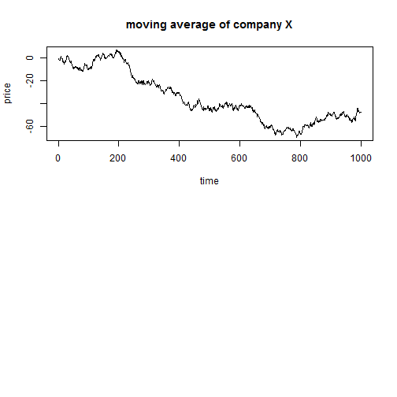

It has been argued that there is a lot of randomness in the stock market. For example, a random graph that looks similar to a Wall Street chart can be made in R with one line:
par(mfrow = c(2, 1))
plot(cumsum(rnorm(1000)), type = "l", main = "moving average of company X",
ylab = "price", xlab = "time")
